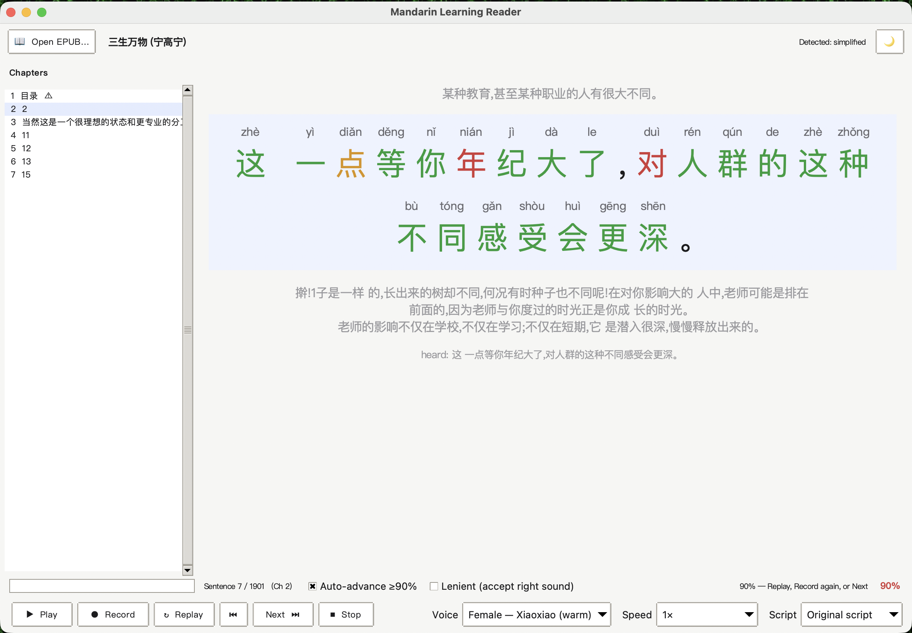
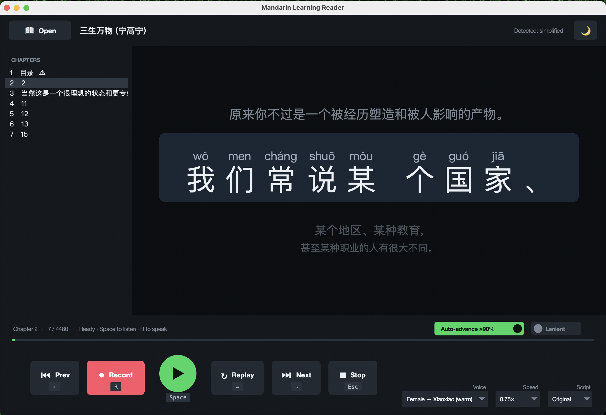

Pinyin above every character
Tone-marked, sitting directly above the character, so you never break the sentence to look something up.
Flashcards teach you words. Books teach you Chinese.
Point it at any Chinese e-book and it becomes a patient tutor. One sentence at a time, large and centred, with pinyin printed above every character. It reads the line aloud in a natural voice, then listens to you say it back and colours every character green, amber or red. Score 90% and it moves you on by itself. All of it runs on your own computer, for free, and your voice never leaves the machine.

per character, not one score for the sentence. You find out which character you missed.
and it advances on its own, so a good run flows without touching the mouse.
from 0.5× while a phrase is new up to 1.5× once it clicks.
Speech recognition runs locally. No account, no subscription, no audio upload.
Start · the gap it fills
Most Chinese reading tools show you the text and, at best, read it to you. The half that is missing is the half that matters for speaking: nobody checks whether what came out of your mouth was right.
A tutor does that, and a tutor is expensive and only available on Tuesdays. This does the narrow, mechanical part of the job, did you say the characters on the screen, for free, on demand, at whatever hour you happen to be reading.
↓ the loop
Tone-marked, sitting directly above the character, so you never break the sentence to look something up.
The current line is large and centred; neighbours sit faded above and below, like scrolling lyrics.
Long paragraphs split at natural pauses, and lines that come out too short get stacked back together. Each unit is a comfortable mouthful.
Flip the whole text either way from a menu, any time, whichever the book was written in.
Male or female, Mainland or Taiwan accent. Once a line has been read, replaying it is instant.
Lenient grading counts near-misses that sound right, so homophones stop feeling like a punishment.

↓ the marking
Green and red are obvious. Amber, right sound, wrong character, is the one that teaches you something, because it separates "you can't pronounce this" from "you pronounced a different word that sounds identical." Those are completely different problems and most tools score them the same.
That distinction is also why Lenient mode exists. Mandarin has an enormous number of homophones, and a learner who says the right syllable with the right tone has done the thing being practised, even when the recogniser picks a different character.
↓ staying out of the way
Close it and reopen it and you are back on the same book, chapter and sentence, with your voice, speed and settings intact. Chapters are listed down the side, with cover, copyright and contents pages flagged so you can skip to the actual reading.
There are two interfaces doing the same job: a modern media-player layout that behaves like a cross between a music app and a karaoke machine, and a classic reader. Both have light and dark themes and a full set of keyboard shortcuts, so the whole loop works without reaching for the mouse.
↓ what it can't do
The scoring works by comparing what the speech recogniser heard against the characters on screen. That is a good proxy for pronunciation and it is not the same thing as tone assessment. A recogniser can be forgiving in ways a native listener would not be, and it can also mishear you when you were right.
It needs the internet the first time a sentence is spoken, to fetch that line's audio. Everything afterwards, including the speech checking, runs on your machine. And you supply your own books: the repository ships code only, no copyrighted text.
Finish · what it is built on